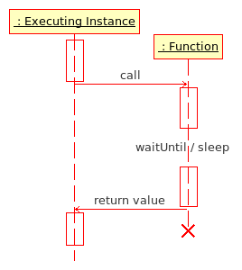

Function
A function is a piece of code which performs a specific task and is relatively independent of the remaining code. They often accept input parameters and sometimes return values back to the Script (File) that called them.
Usage
Functions should be used for any processes where the result or calculation done in the function is important. This result or calculation should be made in the least time possible. They are unlike Script (File), where timing is important.
Functions can also be used to reuse code. You can write some code once in the function and then include it in many different scripts. When the code is updated, it is updated for all scripts. When you only copy and paste the code to the other scripts, you have to update every script on any change.
Syntax
Functions are strictly limited to SQF Syntax.
Execution
Function Execution Diagram
Executing Instance: Script (File), function or game engine
Functions can be executed from several points in the game:
Other Script (File)
Other functions
Scripting lines in the 2D Mission Editor (see VBS3 Editor Overview in the VBS3 Editor Manual).
Event Handlers in addon config files
Functions are first loaded as String from a file via preprocessFile or loadFile. They are then executed via the call or spawn command. The loaded String needs to be compile in order to convert it to Code, which is required for call or spawn.
Call
Example:
myFunction1 = compile loadFile "myFunction1.sqf";
myFunction2 = compile preprocessFile "myFunction2.sqf";
_result1 = call myFunction1;
_result2 = [1, 2] call myFunction2;
Functions executed using call are run within the executing instance, which waits for the result of the function. Unlike scripts, functions halt all other game engine processes until the function has completed its instructions. This means functions run faster than scripts, and the result of functions is immediate and unambiguous. It can also mean that if a function takes too long to run it will have an adverse effect on game play - large functions or CPU intensive functions can cause the game to seize up until it completes. When creating a functions you want the function to be short and sweet to achieve the best results.
Note: You can still use the special variables and commands of Script (File) in functions.
Spawn/execVM
Functions may also be executed using spawn or execVM, but then the function result is not accessible, making it behave more like a procedure. Spawned functions will run asynchronously or alongside the executing instance. This helps prevent large CPU intensive functions from seizing up the game.
Example:
myFunction1 = compile loadFile "myFunction1.sqf";
myFunction2 = compile preprocessFile "myFunction2.sqf";
spawn myFunction1;
[1, 2] spawn myFunction2;
Return Value
Call
A called functions will return the result of the last Expression executed.
Whether that expression is followed by a semicolon or not has no effect on what is returned.
return.sqf
STATEMENT 1;
STATEMENT 2;
RETURN_VALUE
test.sqf
value = call compile preprocessFile "return.sqf";
// value is now RETURN_VALUE
call compile preprocessFile "return.sqf";
// valid, but RETURN_VALUE is not saved anywhere
Locally defined function, returning a string that is determined within an if...then condition:
_func = {
_val = _this select 0;
// as this is the last command in the function, its result will be returned
if (_val>5) then {
"bigger"
} else {
"smaller"
};
};
player sidechat ([1] call _func); // outputs "smaller"
player sidechat ([7] call _func); // outputs "bigger" Spawn/ExecVM
Spawned functions just return their handle, to be used with scriptDone or terminate.
Examples
Example 1: max.sqf
In this example the function returns maximum of first and second argument.
max.sqf
comment "Return maximum of first and second argument";private ["_a","_b"];
_a = _this select 0;
_b = _this select 1;if (_a>_b) then {_a} else {_b}
executing script:
fMax = compile preprocessFile "max.sqf";
maxValue = [3,5] call fMax;
// maxValue is now 5
Example 2: infantrySafe.sqf
In this example the function returns no value and switches all units to safe mode.
comment "Switch all infantry units to safe mode";
{if (vehicle _x == _x) then {
_x setBehaviour "safe"
}
} forEach _this
Example 3: Inline Function
An inline-function can be created in any script:
FNC_sayhello = {hint format["hello %1",_this]};This function can then be called (in other scripts, functions, unit's init lines, trigger activation fields, etc.) via:
name player call FNC_sayhello
Notice that there are no brackets around the functions arguments which precede the call command.
In case the function doesn't require any arguments you can just call the function.
call FNC_helloall